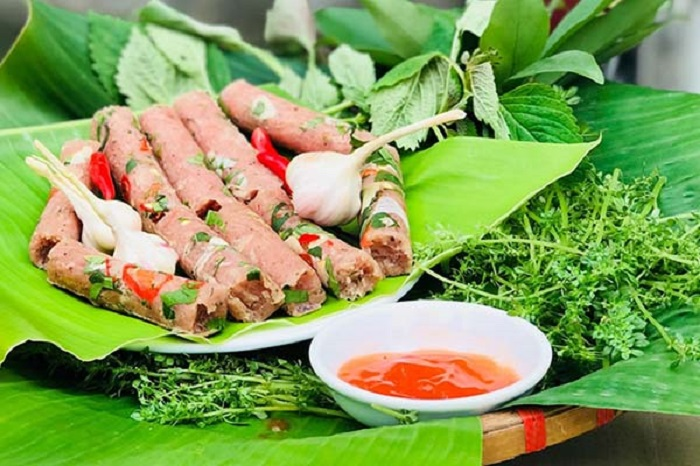
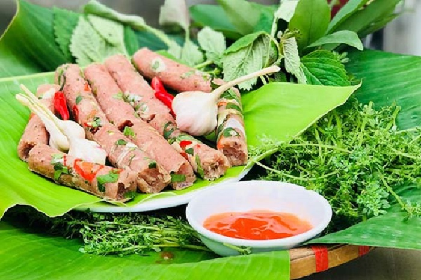
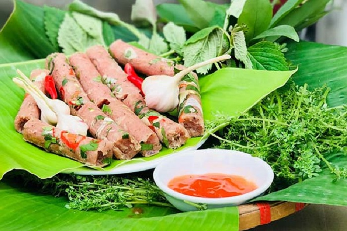
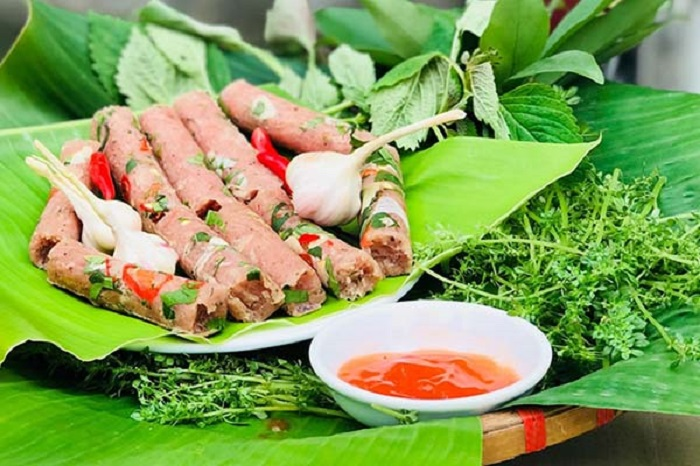
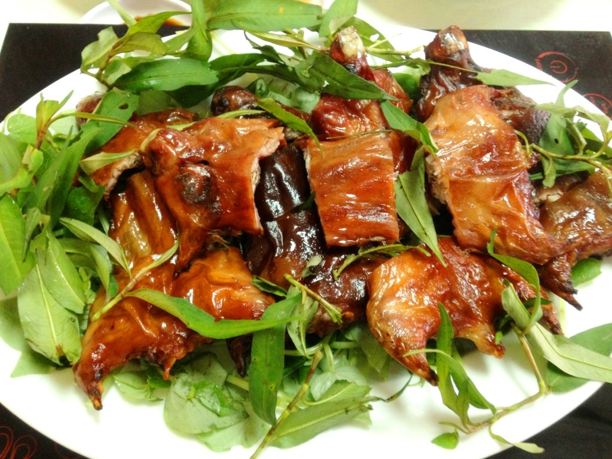

 

Miền Trung có đặc sản gì? Miền Trung từ lâu nổi tiếng không chỉ với nhiều danh lam thắng cảnh đẹp. Nơi đây còn ghi đậm dấu ấn trong lòng du khách bởi các món đặc sản Miền Trung thơm ngon lừng danh vô cùng độc đáo.
Mục lục
Đặc sản Miền Trung có hương vị rất riêng và độc đáo, mang đậm nét miền Trung đều là những món ăn dân dã được chế biến từ những nguyên liệu địa phương giản dị, bình thường. Nếu đang có kế hoạch đi du lịch ở đây và quan tâm tới ẩm thực Miền Trung có gì về làm quà cho người thân thì hãy theo dõi bài viết dưới đây nhé!
Nếu Hà Nội nổi tiếng với bát bún thang, bún mọc nóng hổi, ấm lòng thì miền đất Huế mộng mơ lại lừng danh với bát bún bò độc đáo, lạ miệng. Một tô bún bò Huế là sự kết hợp hài hòa của nước dùng thanh ngọt, cùng đầy đủ các loại rau, củ đầy dinh dưỡng. Bún bò Huế có hương vị rất riêng, không thể “lẫn” với những loại bún khác bởi vị ngon đặc trưng của mắm ruốc, hương sả, khi thưởng thức sẽ có vị ngọt dịu dàng, mùi thơm dễ chịu chứ không nồng, không tanh. Cái vị đậm đà, quyến rũ ấy khiến bún bò Huế trở thành món ăn đặc sản miền Trung không thể bỏ qua.
Địa chỉ: Cháo Bà Liễu - 87 Mai Hắc Đế, thành phố Vinh, Nghệ An. Giá tham khảo: 30.000 – 45.000 VNĐ/bát

Một món ăn không quá xa lạ với nhiều người, nhưng nếu muốn ăn một tô Mì Quảng ngon đúng vị, bạn sẽ không thể tìm thấy tại bất cứ đâu trừ Quảng Nam - Đà Nẵng. Đây là món ăn được ví như cái “hồn” của ẩm thực Quảng Nam và sẽ không khó để tìm thấy địa điểm ăn mì Quảng vì đâu đâu ở nơi này từ trong ngõ ngách cho tới chợ búa, làng mạc, đến khu phố nhộn nhịp, người ta có thể dễ dàng thưởng thức được tô mì thơm ngon với tôm, thịt heo tươi thái lát hay thịt gà xé miếng nhỏ, vị beo béo của dầu, hương thơm của đậu phộng, nước lèo sánh, ngọt đủ thấm và không thể thiếu bánh đa vừng giòn ngậy ăn kèm với các loại rau sống như xà lách, diếp cá, húng, rau mùi, bắp chuối,… Những nguyên liệu đó như hòa quyện với nhau, hài hòa làm tăng thêm hương vị, tôn lên nét đặc trưng của một tô mì Quảng trứ danh.

Đây là một loại bánh rất nổi tiếng của các tỉnh ven biển miền Trung, có hình dáng gần giống với bánh khọt của người miền Nam. Nhưng phần nhân của bánh căn phong phú và đa dạng hơn rất nhiều, có nhiều loại như: thịt, trứng, nấm, mực, tôm... Ăn kèm là rau sống các loại cùng nước chắm như: mắm nêm, nước mắm chua ngọt,…

Ẩm thực Hội An luôn là một điều gì đó vô cùng cuốn hút khách du lịch. Và nhắc đến ẩm thực phố Hội thì chúng ta phải nhắc đến món Cao lầu trứ danh. Cao lầu được xem là niềm tự hào của ẩm thực nơi đây, món ăn này đặc biệt từ tên gọi cho đến cách thức chế biến. Để có được sợi mì dai giòn cần phải trải qua rất nhiều công đoạn, từ lúc ngâm gạo thơm trong nước tro,rồi lọc cho kỹ, xay gạo ra, bòng, rã cho ra nước, rồi lại nhồi, hấp nhiều lần nữa và cuối cùng đem phơi khô. Những sợi mì tươi, điểm xuyết vài sợi mì khô chiên giòn, vài miếng thịt lợn thái lát mỏng, chan lên chút nước dùng ngon ngọt, đậm đà, ăn kèm với rau đắng, cải con hay húng lủi thì cứ gọi là ngon hết nấc. Sau khi thăm thú chán chê Hội An xinh đẹp, dừng chân tại một quán ven đường, gọi cho mình bát Cao lầu và thưởng thức hương vị đặc biệt của nó là một lựa chọn tuyệt vời cho chuyến đi của bạn đấy.

Bánh canh có phần khiêm tốn hơn về mức độ phổ biến, song vẫn là một trong những món ăn chiếm được nhiều cảm tình của người bản địa lẫn khách du lịch. Nổi tiếng nhất vẫn và Bánh canh cá lóc tại Quảng Trị và Huế. Món bánh canh cá lóc có thành phần khá đơn giản, bao gồm sợi bánh canh làm từ bột gạo và thịt cá lóc đồng. Khâu làm bánh canh, nguyên liệu chính của món ăn luôn là khâu quan trọng hàng đầu. Bột gạo được chọn để làm bánh phải đảm bảo được độ dai dẻo và vị ngọt tự nhiên khi nấu lên.
Nói đến du lịch Thanh Hóa thì mọi người sẽ nghĩ ngay đến bãi biển Sầm Sơn, một trong những bãi biển hút khách du lịch nhất tại Việt Nam. Về ẩm thực thì nơi đây cũng rất hấp dẫn du khách bởi những món ăn như bánh răng bừa Thanh Hóa, chả tôm Thanh Hóa. Ngoài ra, còn một món ăn đặc sản nức tiếng gần xa đó chính là nem chua. Thưởng thức món nem của xứ Thanh, bạn sẽ phải say đắm với vị giòn, ngon của bì lợn, vị chua của thịt, vị cay của ớt, tỏi… Bên cạnh đó, người dân còn khéo léo cho thêm vị nồng của lá đinh lăng tạo nên một hương vị ẩm thực ngon khó tả. Nem chua không chỉ là một món ăn truyền thống được sử dụng trong những dịp lễ tết quan trọng mà còn là một món quà thiết đãi bạn bè gần xa mỗi khi đến với miền quê Thanh Hóa. Thưởng thức nem chua Thanh Hóa dù chỉ một lần là bạn sẽ nhớ mãi hương vị thơm ngon ấy.
Đây là một trong những món ăn độc đáo bạn nên thử khi đi du lịch Nghệ An. Chuột đồng được người dân địa phương bắt và sơ chế sạch sẽ, bỏ đầu, đuôi và da. Phần thân chuột sẽ được chế biến thành nhiều món ăn với đủ các hương vị độc đáo như xào lăn, nướng than hoa… Đây cũng là một trong những món ăn đặc sản Yên Thành Nghệ An “sang chảnh” dùng để tiếp đón khách quý tới nhà của người dân địa phương nơi đây.
